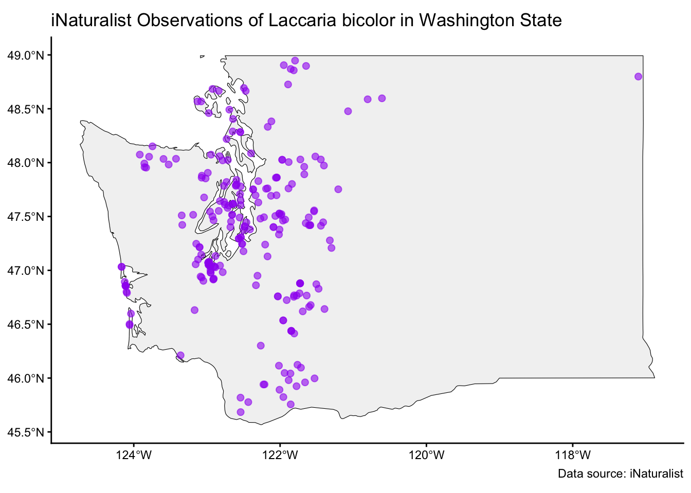

Laccaria bicolor
Date: October 13, 2025
1. Taxonomy & Nomenclature
Scientific Name (current):
Laccaria bicolor (Maire) P.D. Orton, Trans. Brit. Mycol. Soc. 43 (2): 177 (1960) [MB#332790]Synonyms / Former Names:
Laccaria proxima var. bicolor (Maire) Kühner & Romagn., Flore Analytique des Champignons Supérieurs: 131 (1953) [MB#456881]Laccaria laccata var. pseudobicolor Bon, Doc. Mycol. 12 (46): 42 (1982) [MB#117108]
Common Name(s):
Deceiver (Money NP), Bicolored DeceiverTaxonomic Authority / Citation:
Laccaria bicolor (Maire) P.D. Orton, Trans. Brit. Mycol. Soc. 43 (2): 177 (1960) [MB#332790]Higher Classification (Kingdom / Phylum / Class / Order / Family):
Fungi > Dikarya > Basidiomycota > Agaricomycotina > Agaricomycetes > Agaricomycetidae > Agaricales > Agaricineae > Hydnangiaceae > Laccaria > Laccaria bicolor
2. Morphology & Identification
Fruiting Body Description: (size, shape, color, texture)
Orange-brown in color, hygrophanous surface that becomes more translucent with moisture. Texture is hairy/scaly. Cap is typically 10-70mm across and stipe is typically 30-100mm long.Cap / Pileus Characteristics:
Has a broad and convex pileus sometimes with a depression in the center, 10-70mm across. Margins often curl inward and under toward the stipe.Gills / Pores / Spines / Teeth / Etc.:
Gills adnate, occasionally notched. Light purple/lilac in color but fade with age. Gills are fairly thick and broad, around 5-8mm, and have even edges.Stipe / Stem / Attachment / Ring / Volva / Base:
Same orange-brown color as the cap, hollow and without a veil. 30-100mm long and 10mm thick. Lilac mycelium at base, which is slightly swollen.Spore Print Color:
WhiteMicroscopic Features (if available): (spore size & shape, cystidia, etc.)
7-9 x 6-8 microns in size, elliptical to round with small spines around 1-2 microns long. Nonamyloid with four-spores basidia. Has filamentous cheilocystidia.Other Diagnostic Characters: (odor, bruising reactions, latex, color change, etc.)
Color change due to moisture gain/loss can make it difficult to discern between similar species. Odor and taste not distinctive.Similar Species / Potential Confusions:
Laccaria proxima, L. laccata, L. amethysteo-occidentalis, L. noblis, L. fraterna
3. Distribution & Habitat in Washington
Range (counties or regions):
Common across North American coastal regions. Western North America, the Great Lakes, and West Virginia. Debatable whether similar individuals in Northern Europe are of the same species.Geographic Distribution in WA:
On the west side of Cascade, mainly distributed in Western Washington.Elevation Range:
Mainly found in temperate and boreal forests.Habitat Types / Substrate Preferences: (forest type, soil, leaf litter, dead wood, etc.)
Conifer/boreal forests, often found in moss.Host Associations (if applicable):
Ectomycorrhizal with pine/birch host roots
4. Seasonality & Phenology
Months of Fruiting in WA:
Summer and Fall, peak in OctoberSeasonal Notes: (peak times, moisture dependence, etc.)
Peak time in October, prefers high moisture boreal/temperate forests and is often found in/around moss.

5. Ecology & Role
Ecological Function: (saprotroph, mycorrhizal, parasite, etc.)
Mycorrhizal with conifers, carnivorous. Saprotrophic and biotrophic, as demonstrated by Martin et al. (2008).Substrate / Decomposition Role:
Cannot degrade plant cell walls, but can degrade other polysaccharides, according to Martin et al. (2008).Interactions: (plants, animals, other fungi, pathogens)
Carnivorous and consumes insects such as springtails (Folsomia candida) in order to provide nitrogen to the conifers (such as Pinus strobus) it has ectomycorrhizal associations with. It receives carbon from the trees in exchange.It produces a toxin in order to immobilize the insects prior to hyphae invasion. In an experiment done by Klironomos & Hart (2001], 15N-labeled springtails were placed in the presence of only the fungus, not the plant roots, but the fungus was in contact with the Pinus seedlings via mycorrhizal association. After two months, they found 15N in the plant foliage and determined that up to 25% of the Pinus nitrogen came from the springtails, which they had no connection with other than through Laccaria bicolor. Less than 10% of the springtails remained by the end of the experiment.
As demonstrated by Schrey et al. (2012), some streptomycete bacteria are able to induce and support the growth of Laccaria bicolor.
Environmental Sensitivity / Indicators:
Laccaria bicolor is sensitive to soil zinc pollution, but ectomycorrhizal associations with hosts are maintained in the presence of this pollution, as shown by Ottoway et al. (2025).
6. Conservation, Abundance & Threats
Abundance / Rarity in WA:
Native in Washington, not rare.Conservation Status (state, federal, red list):
Not listed under the Endangered Species Act, not of concern according to the Burke Herbarium.Threats / Pressures:
Soil zinc pollution.Management or Monitoring [Notes:\\](Notes:){.uri} None. Not of concerned.
7. Use / Ethnobiology / Toxicology
Edibility / Toxicity:
Edible but doesn’t really taste like anything.Traditional / Cultural Uses:
None.Medicinal / Bioactive Compounds:
Laccaria bicolor produces sesquiterpenes when associated with Populus or Arabadopsis in order to stimulate lateral root growth prior to direct contact, as shown by Ditengou et al. (2015).Cautions / Warnings:
None.
8. References / Further Reading
Key Literature Sources:
Money NP. (2011). Mushroom. Oxford University Press. p. 73. ISBN 978-0-19-973256-2.Field Guides / Online Resources:
“Laccaria Proxima Var. Bicolor.” Mycobank Database, www.mycobank.org/details/708/170324. Accessed 26 Oct. 2025.“Laccaria Laccata Var. Pseudobicolor.” Mycobank Database, www.mycobank.org/details/708/132699. Accessed 26 Oct. 2025.
“Laccaria Bicolor Var. Pseudobicolor.” Mycobank Database, www.mycobank.org/details/708/132700. Accessed 26 Oct. 2025.
Stevens, Michael Wood & Fred. “California Fungi: Laccaria Laccata.” MykoWeb, www.mykoweb.com/CAF/species/Laccaria_laccata.html. Accessed 26 Oct. 2025.
Stevens, Michael Wood & Fred. “California Fungi: Laccaria Proxima.” MykoWeb, www.mykoweb.com/CAF/species/Laccaria_proxima.html. Accessed 26 Oct. 2025.
“Observations of Bicoloured Deceiver.” iNaturalist, www.inaturalist.org/observations?taxon_id=63238. Accessed 26 Oct. 2025.
“Laccaria Bicolor Bicolored Deceiver.” NatureServe Explorer 2.0, 3 Oct. 2025, explorer.natureserve.org/Taxon/ELEMENT_GLOBAL.2.881122/Laccaria_bicolor.
“Laccaria bicolor.” Mycobank.org, 2025, www.mycobank.org/page/Name%20details%20page/13892. Accessed 26 Oct. 2025.
Burke Herbarium. “Laccaria Bicolor - Burke Herbarium Image Collection.” Burkeherbarium.org, 2024, burkeherbarium.org/imagecollection/taxon.php?Taxon=Laccaria%20bicolor. Accessed 26 Oct. 2025.
Ditengou FA, Müller A, Rosenkranz M, Felten J, Lasok H, van Doorn MM, Legué V, Palme K, Schnitzler JP, Polle A. Volatile signalling by sesquiterpenes from ectomycorrhizal fungi reprogrammes root architecture. Nat Commun. 2015 Feb 23;6:6279. doi: 10.1038/ncomms7279. PMID: 25703994; PMCID: PMC4346619.
Kuo, M. (2010, December). Laccaria bicolor. Retrieved from the MushroomExpert.Com Web site: http://www.mushroomexpert.com/laccaria_bicolor.html
Klironomos, J., Hart, M. Animal nitrogen swap for plant carbon. Nature 410, 651–652 (2001). https://doi.org/10.1038/35070643
Martin, F., Aerts, A., Ahrén, D. et al. The genome of Laccaria bicolor provides insights into mycorrhizal symbiosis. Nature 452, 88–92 (2008). https://doi.org/10.1038/nature06556
Mueller, Gregory M., and Monique Gardes. “Intra- and Interspecific Relations within Laccaria Bicolor Sensu Lato.” Mycological Research, vol. 95, no. 5, May 1991, pp. 592–601, https://doi.org/10.1016/s0953-7562(09)80073-7. Accessed 28 Jan. 2021.
Ottaway M, Swinnen J, Verhaevert K, Ruytinx J. Impact of sublethal zinc exposure on ectomycorrhizal Laccaria bicolor x poplar symbiosis. Front Plant Sci. 2025 Sep 1;16:1656580. doi: 10.3389/fpls.2025.1656580. PMID: 40959553; PMCID: PMC12434098.
Schrey SD, Erkenbrack E, Früh E, Fengler S, Hommel K, Horlacher N, Schulz D, Ecke M, Kulik A, Fiedler HP, Hampp R, Tarkka MT. Production of fungal and bacterial growth modulating secondary metabolites is widespread among mycorrhiza-associated streptomycetes. BMC Microbiol. 2012 Aug 2;12:164. doi: 10.1186/1471-2180-12-164. PMID: 22852578; PMCID: PMC3487804.
US Department of Energy photographic archives] |Date=August 1-2, 2007 |Author=US Department of Energy photo. http://www.doedigitalarchive.doe.gov/ImageDetailView.cfm?ImageID=2016196&page=search
Herbarium / Specimen Records (if applicable):
9. Images / Illustrations
Fruiting Body Photos:
Laccaria bicolor Fruiting Body. Credit: Michael Kuo Habitat Photo:
Microscopy Photo (if available):
Microscopy Spores
10. Other Notes & Observations
Field Notes / Observations:
Color change due to moisture gain/loss can make it difficult to discern between similar species. It is also sometimes regarded as a subspecies of Laccaria laccata.Fun facts: Carnivorous and consumes insects such as springtails (Folsomia candida) in order to provide nitrogen to the conifers (such as Pinus strobus) it has ectomycorrhizal associations with. It receives carbon from the trees in exchange.